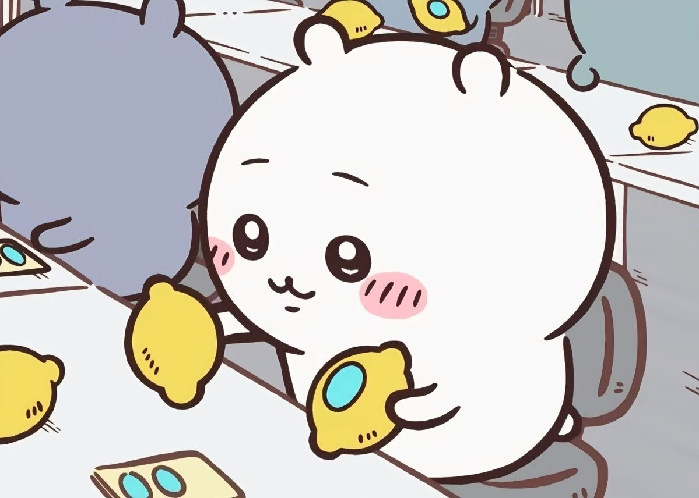

Interesting Facts
Here you can find some interesting facts about our favorite things.
- Chiikawa started as a Twitter webcomic in 2020.
- Chiikawa became an animated series in 2022.
- The first feature-length film in the Chiikawa franchise released in 2026!
- In the world of Chiikawa, characters have to work manual labor jobs to survive. Is this series a critique of capitalism?!
